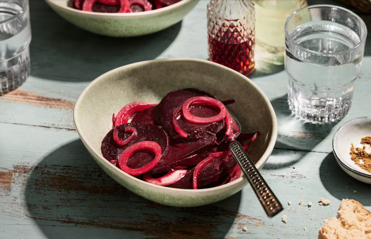

Delicious Recipes
Home
Frühstück
Mittagessen
Abendessen
Rote Bete Salat

Rote Bete Salat
Zutaten
1 kg Rote Bete
2 Zwiebeln
1 EL Weinessig
1 EL Öl
1 TL Zucker
1 TL Kümmel
Jodsalz
Zubereitung
Rote Bete Knollen in kaltem Wasser aufsetzen und ca. 1 Stunde kochen lassen.
Etwas abkühlen lassen und dann pellen.
Knollen in dünne Scheiben schneiden und Zwiebeln in dünne Ringe schneiden.
Die Zwiebelringe erst mit den Rüben mischen, wenn diese schon abgekühlt sind.
Aus Essig, Öl und den Gewürzen eine Marinade zubereiten und über das Gemüse gießen.
Salat mindestens 3 Stunden oder am besten über Nacht durchziehen lassen.